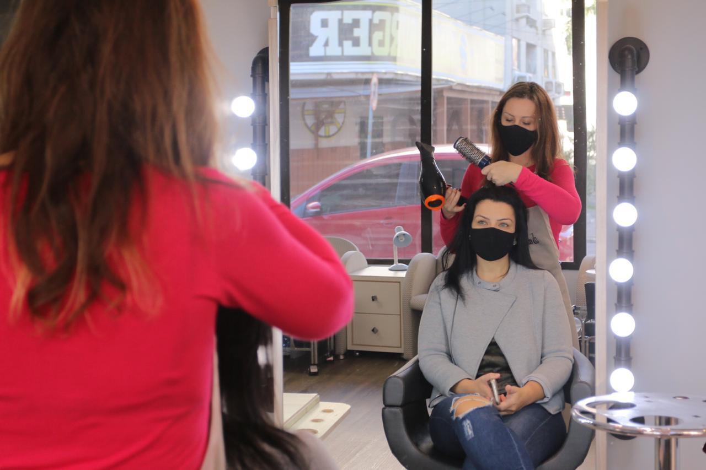

Santa Catarina soma mais de 190 mil pessoas que superaram o coronavírus. O bom resultado faz com que o Estado tenha a menor taxa de letalidade do país, de 1,28%, de acordo com dados do Ministério da Saúde
Não foram as dores fortes nem o cansaço. Para Elza Zucchi Lemes, 70 anos, o pior efeito da Covid-19 foi viver a angústia de ter o filho mais velho e o marido internados em estado grave. O momento em que precisou deixar o companheiro de vida no hospital foi um dos mais desesperadores.
“Nós aguardávamos o resultado dos exames quando a equipe médica chegou com a notícia de que eu estaria liberada para fazer o tratamento em casa, mas ele teria que ficar internado. Na mesma hora, trocaram a roupa, puseram os equipamentos e o levaram em uma maca. Eu fiquei ali, desesperada. Coloquei as roupas em uma sacola e vim para a casa sozinha, sem saber se voltaríamos a nos encontrar”, relata Elza, tomada pela emoção da lembrança.
Todos os cuidados para prevenir o novo coronavírus não foram suficientes para evitar que ela, o marido, Ebirajara Corrêa Lemes, 70 anos, dois filhos adultos e um neto adolescente fossem acometidos pela doença. Do diagnóstico positivo até a cura, a família passou por um período de muita angústia. Mas, depois dos dias difíceis, teve início o que eles chamam de nova vida. A família de São José, na Grande Florianópolis, venceu a Covid-19 e está entre os mais de 190 mil recuperados da doença em Santa Catarina.
Para a filha mais moça, Tamary Lemes Pinciano, de 39 anos, e o filho dela, Davi Lemes Franz, 17, a Covid-19 se apresentou de forma leve. Já o filho mais velho, Pedro Lemes, 42, e seu Ebirajara tiveram complicações graves e precisaram de tratamento intensivo.
Pedro foi o primeiro a ir para o hospital. O filho precisou ser intubado e ficou quase 20 dias internado. A obesidade estava entre os fatores de risco para a Covid-19. No momento mais crítico do filho, o pai, diabético e com comprometimento dos pulmões, foi internado na UTI em um outro hospital.
“Minha esposa e eu adoecemos juntos. Eu achava que o caso dela estava mais complicado que o meu, mas, na segunda ida ao hospital e depois de realizarmos exames, ela foi liberada e eu não pude voltar para casa. Fui na mesma hora para a UTI”, lembra Ebirajara.
A batalha da família Lemes no enfrentamento à Covid-19 revela algumas das facetas cruéis desta doença: o medo, o tratamento isolado e a angústia de não saber se o organismo vai conseguir combater o vírus. “De uma hora para a outra, a gente vai e não sabe se volta”, conta o aposentado.
"Somos outras pessoas, transformados e conscientes de que é preciso amar mais"
Ebirajara Corrêa Lemes, aposentado
Com o pai e o irmão internados, a filha Tamary foi quem organizou toda a rotina de cuidados e isolamento na casa, além de receber os boletins médicos de dois hospitais diferentes. Dos dias mais difíceis que enfrentou, lembra das conversas com Deus, isolada e cheia de incertezas. “Eu não podia aceitar que um vírus levaria embora toda a minha família. Eu pedi forças e comecei a acreditar que poderíamos vencer aquele momento. Sou muito grata por ter dado tudo certo e ofereço minha solidariedade a todos aqueles que perderam seus entes queridos”, afirma.
Ao contrário do filho, Ebirajara ficou consciente o tempo todo durante os cinco dias em que esteve internado na UTI. “É uma operação de guerra esta em que pacientes e profissionais de saúde estão enfrentando para vencer esta doença”, destaca. Ele lembra que, no mesmo ambiente em que estava internado, acompanhou gente perdendo a luta para a Covid-19, além do esforço incansável das equipes para salvar vidas.
Depois dos dias turbulentos de tratamento em julho deste ano, eles só pensam em valorizar ainda mais os momentos juntos. Elza e Ebirajara ainda têm sonhos para realizar. Viajar é um deles. Ela quer voltar à Terra Santa. Ele planeja visitar a França, mas afirma que já realizou o maior de todos os desejos: “Eu só pedia a Deus para entrar por esta porta e voltar para a minha casa, nada poderia ser mais importante e eu consegui este milagre”, agradece.
Apesar de ter ficado com comprometimento do pulmão, e por isso precisar encarar sessões de fisioterapia, o aposentado está novamente perto das pessoas que mais ama, como a neta Rebecca. Segundo ele, a menina tem talento para a música e o avô é um incentivador. O teclado onde ela ensaia fica bem próximo à porta de entrada da casa, por onde ele voltou curado. Agora, pode acompanhar Rebecca recitando as primeiras partituras musicais. A garota já consegue tocar os primeiros acordes de um clássico, a Nona Sinfonia de Beethoven - Ode à Alegria.
A música diz: “Ó, amigos, não esses sons! Em vez disso, cantemos algo mais agradável e alegre. Alegre!”. Com apenas oito anos e com a seleta plateia da mãe e os avós, recuperados de uma doença grave, talvez ela ainda não se dê conta de que está fazendo ecoar a trilha sonora que vai marcar para sempre a história de superação da família.
“Somos outras pessoas, transformados e conscientes de que é preciso amar mais, ajudar mais o outro, viver de maneira correta e valorizar mais os momentos em família. Todo o resto pode esperar”, conclui Ebirajara.
Conheça mais histórias
SALA DE AULA
A escola vai até os alunos para levar conhecimento e carinho
CAMPO
Mais de 500 mil produtores rurais se adaptam para garantir o cultivo
RECUPERADOS
Catarinenses superam a Covid-19 e fortalecem laços

NEGÓCIOS
Empreendedores se adaptam e Governo auxilia empresas a atravessarem momento desafiador
HOSPITAIS
A rotina de quem se dedica a salvar vidas em meio à pandemia